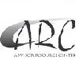

...шагает наш отряд...
Длинный перерыв в обновлении новостной ленты был вызван отнюдь не отсутствием интересных событий. И все же мы готовы представить на ваш суд отчет с событий последних игровых дней...
За истекший период ТоР продолжая свой путь на лиге RWL успел разобраться еще с двумя кланами. И если в случае с IACT наша команда победила ожидаемо и без особых проблем, то в поединке с казахстанской командой ARC Всеми ожидалась тяжелая борьба, многие в РВЛ комьюнити предсказывали наше поражение, но к счастью все обошлось и даже без особых неприятностей.
 --vs--
--vs--

ToP)Exe—[2:0]—
iAct.SweDe
noobkiller—[0:2]—

iAct.Mirror

ToP)Diablo—[2:1]—
iAct.Derain
Xorek[1990]—[2:1]—
iAct.Vov4ik
ToP AT (
Exe+

Fist)—[2:1]—IACT AT (
Vov4ik+
Derain)
Если говорить о первом матче против inActionGaming, то русский клан начал очень бодренько и здорово вструхнул еще не разогревшихся игроков ТоР-а. Хорек, Диабло и АТ поначалу проигрывали 0-1, но... в итоге односторонний счет 4-0. Поражение Нубкиллера случилось уже при счете 4-0 на диком лаге. В итоге задача минимум выполнена, но кв был не самым ярким.
--vs--
ToP)Exe—[2:0]—
arC_Dread
noobkiller—[0:2]—
arC_HeAveN4e_GG
ToP)Diablo—[2:0]—
arC_Rush
Xorek[1990]—[2:0]—
arC_arC_Bespe_GG
ToP AT (
Exe+
Fist)—[1:2]—ARCP AT (
Bespe_GG+
HeAveN4e_GG)
Второй матч против казахстанского клана сложился хоть и несколько проще в плане игры, но значительно сложнее в плане моральном (очень сильно давила на психику массовая реклама клана соперника и многочисленные "болельщики", которые всячески поливали нашу команду грязью. В итоге матч был выигран буквально на стадии подачи ЛА. Не побоюсь этого слова, гениальный, ЛА by Gannibal. Преднамеренная отдача Вила на СВ под сильнейшего игрока чужой команды и вывод остальных игроков на удобные им карты, против удобных соперников, позволили ТоР-у без особых напрягов выиграть три остальных соло 2-0 каждое. После столь уверенной победы, АТ матч был бездарно проигран нашими игроками. Ведя по ходу встречи 1-0 наши игроки расслабились и упустили победу проиграв в итоге 1-2. Общий счет кв, к сожалению, лишь 3-2 в нашу пользу. Следующим нашим соперником на RWL станет русский клан AGA, который прочно обосновался в середине турнирной таблицы.
Heroes 5:Ukraine final part
В предыдущей новости вы могли прочитать прямой репортаж с первого дня финала неофициального чемпионата Украины по Heroes 5. Большое спасибо Хану, который вел репортаж на протяжении первого игрового дня. К сожалению технические проблемы не позволили вести репортаж со второго дня соревнований. А жаль, было много интересного. Восполним же данный пробел и вкраце пройдемся по событиям второго игрового дня:
1/4 финала:
DT.Magot--2:0--Lizard
Никаких шансов у Симферопольского игрока. После неплохого для себя первого дня Лизард просто без борьбы отдал матчи 1/4.
wnet.Relax--2:1--sw.Invisible
Мини сенсация. НЕприятным для харьковчан "апсетом" запахло уже после первой игры и счета 1-0 в пользу приезжего львовянина. Во второй игре Миша вроде бы опомнился и уверенно победил, но после напряженной третьей игры все таки покидает турнир несоответсвенно его классу рано.
ToP)Gannibal.sw--2:0--sw.DH
Эти игроки довольно часто встречались между собой на харьковских ивентах. В данном случае получилось так же, как и на отборах в Харькове. Ганнибал без труда выигрывает первую игру, вторая вышла понапряженнее, но...
ApxuBaruyc--2:0--ZaP
Ветеран героев из симферополя без особых проблем обыгрывает амбициозного уроженца Черкасс.
1/2 финала:
ToP)Gannibal.sw--2:0--ApxuBaruyc
Обе игры проходили в быстром темпе с множеством активных действий в центре карты. И оба раза харьковчанин оказался чуть-чуть, но лучше.
DT.Magot--2:1--wnet.Relax
Очень равные и сложные игры. Первую игру киевлянин выигрывает уверенно задавив соперника мощными атаками с самого начала, понавешав антимагию на кастеров. Следующие две игры были весьма равными, но именно киевский игрок, проигравший свою первую карту на этом турнире, в итоге оказался победителем этого полуфинала.
финал и матч за третье место:
wnet.Relax--2:0--ApxuBaruyc
Игры получились односторонними. Складывалось такое ощущение, что во время игр симферополец думает не о том, как выиграть, а о том как бы поскорее это все закончилось
ToP)Gannibal.sw--2:1--DT.Magot
Ну и собственно то, что стало наивысшим свершением в карьере менеджера ТоР и игрока sw и то к чему он наверняка шел всю свою карьеру игрока. Думаю многие согласятся- не каждому в жизни дано выиграть чемпионат такого уровня. А игры... Ганнибал проигрывая по ходу матча 0:1 затем в двух упорнейших играх оказался самую малость, но все таки сильнее. n/c.
В итоге места распределились так:
1-е место: ToP)Gannibal.sw (Харьков)- 3000 грн, Flash память 1 гб, кубок
2-е место: DT.Magot (Киев)- 2000 грн, Flash память 1 гб, диплом
3-е место: Wnet.Relax (ЛЬвов)- 1000 грн, Flash память 1 гб, диплом
4-е место: ApxuBaruyc (Симферополь)- 500 грн.
Ну и конечно рассказ был бы неполным без событий набирающей обороты онлайновой лиги ESL. В данный момент в рамках лиги действует три проекта: EPS Qualification Cup, TFT Ladder и Amateur Series. И если первый является одноразовым чемпионатом, то два других- действующие ладдеры, первый- чисто развлекательный, второй- квалификационный в любительскую серию ESL. Участие наших игроков в ЕПС закончилось до обидного быстро. Лучшие результаты показали Фист (луз rac.Fav и VEGA)Faller) и Ехе (луз knet.Majestik и RAC.Alligator) остановившись на стадии топ-16 (ужасающе слабое выступление), на стадии топ-24 прекратили борьбу Вил (лузы против никому не известного игрока sYe и Ехе) а так же Диабло (луз BURN.Kasmatuy и RAC.Bly). В общем выступление можно сказать провальное.
Если же говорить о ладдерах, то тут наши игроки показывают несколько лучшие результаты. В ТФТ ладдере зажигает ВИл, который уже победил 2-0 двух слабых игроков, а так же отметился поражением 1-2 от Rac.Fox-а, а в Аматорском ладдере отметился ЕХе победой 2-0 над сильным киевским андедом Rac.LiveElement. До ладдер шота еще много времени, а значит нас ждет много интересных игр о которых мы непременно будем вас информировать.